Bottom camera tool changer
Made by: Curly Tale Games
Link to source: https://www.printables.com/model/150059-lumenpnp-clip-pcb-holder-feeder-strips-and-nozzle-
Description: I added some more holes to the tool changer so it can be placed near the bottom camera which frees up 25% of your build plate.
Photos:

Y-axis drag chain
Made by: qwertymodo
Link to source: https://www.printables.com/model/171190-lumen-pnp-y-axis-drag-chain-mount
Description: Mounting brackets to add a drag chain for the Y axis of the machine, as well as relocating the umbilical mount for the X axis. Likely not compatible with the official kit wiring harness, but easy enough to add to DIY builds.
Photos:
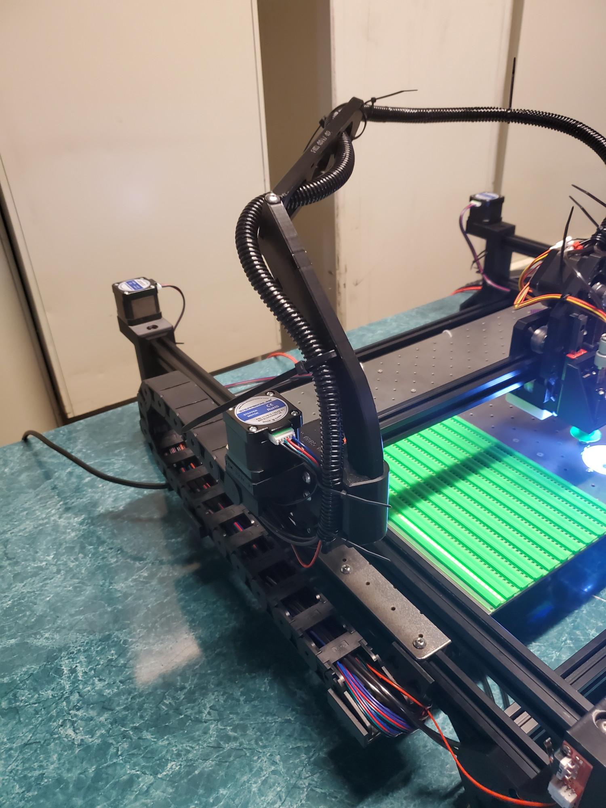
LED strip ring light mounts
Made by: qwertymodo
Link to source: https://www.printables.com/model/171276-lumen-pnp-strip-light-ring-mounts
Description: On-axis mounts to use cheap WS2812B LED strip lights in place of the Lumen ring light PCBs.
Photos:
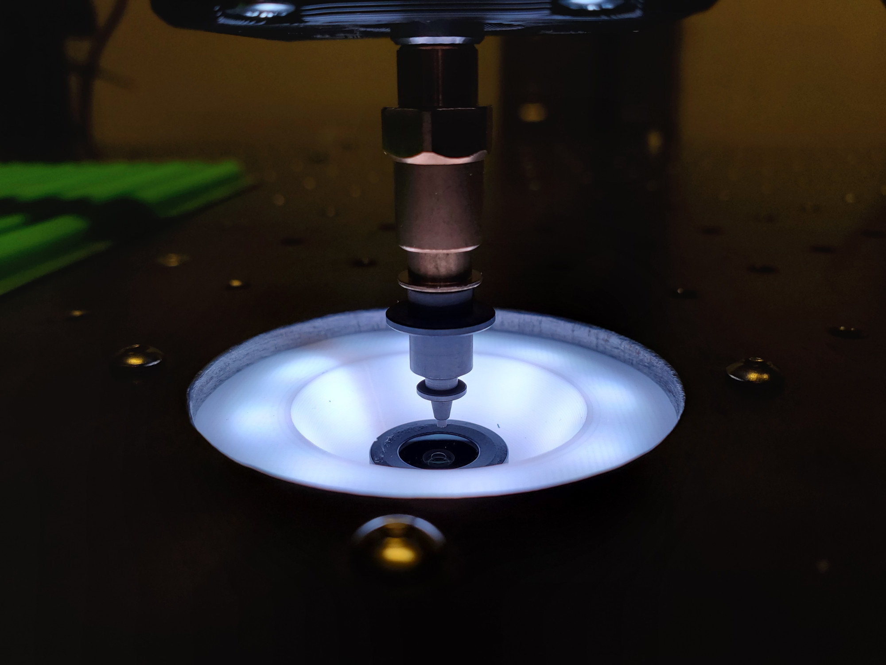
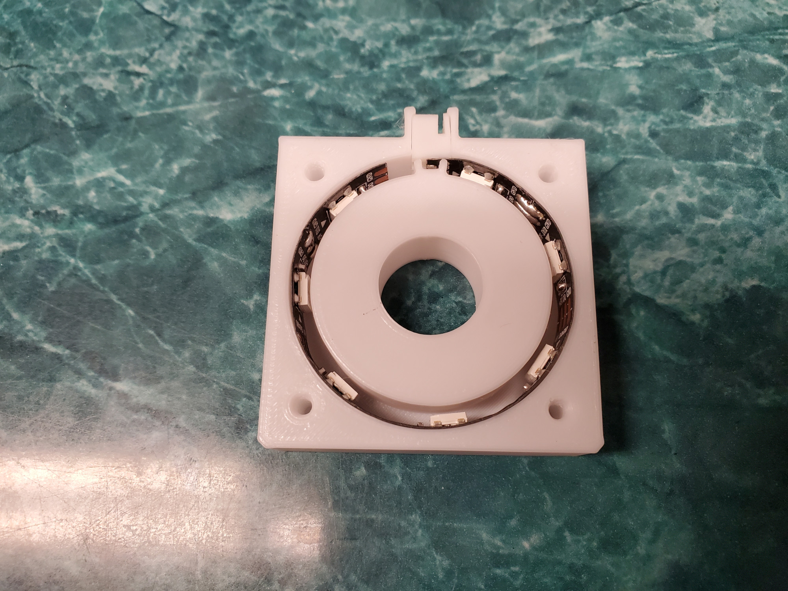
Mean Well power supply mount
Made by: qwertymodo
Link to source: https://www.printables.com/model/171271-lumen-pnp-mean-well-power-supply-mount
Description: Mounting bracket and switched mains inlet cover for a Mean Well LRS-350-24 power supply
Photos:
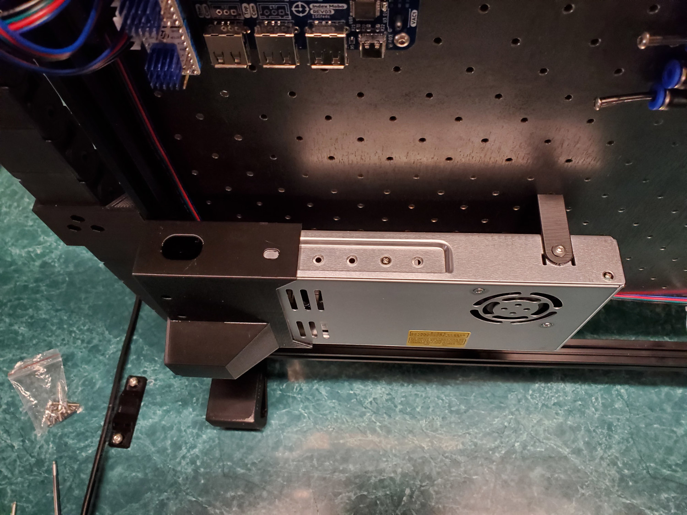
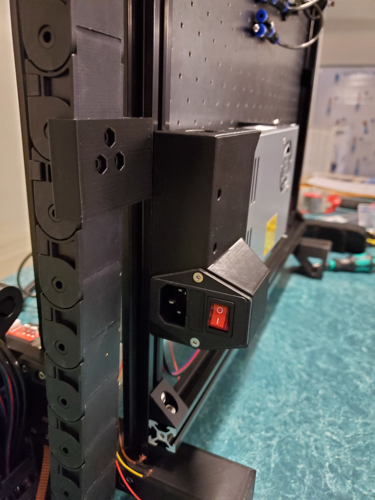
360mm Staging Plate “Long Body”
Made by: qwertymodo
Link to source: https://www.printables.com/model/451094-lumen-pnp-360mm-staging-plate-feeder-rail-mod
Description: Modified front legs that allow the use of both front and back feeder rails with a 360mm staging plate. The rear feeder rail needs to be relocated by removing one of the angle brackets and sliding the rail all the way back against the rear legs. The angle bracket can then be reattached on top of the feeder rail.
Photos:
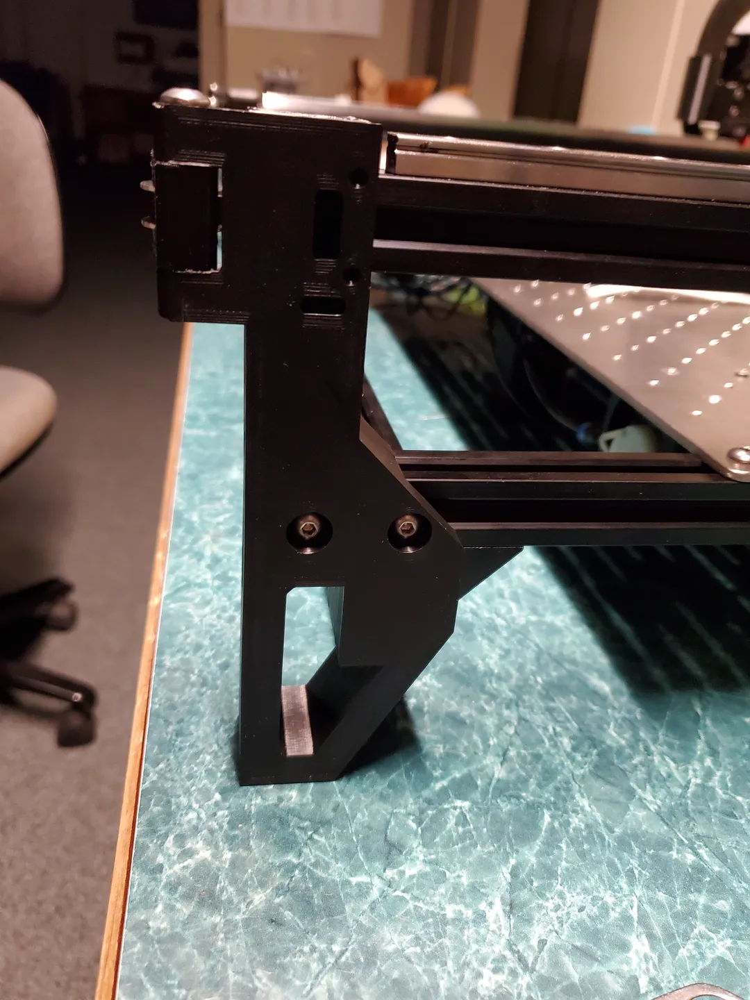
800mm X-axis mod “Wide-Body”
Made by: AlanaCat
Link to source: https://grabcad.com/library/lumenpnp-wide-body-mod-1
Description: This is a set of modified legs for the LumenPnP. Using the Wide Body legs, plus a longer belt and 800mm V-slot extrusion for the x axis, you will be able to access the entire width of the staging plate with both nozzles. Also requires a small change to Marlin’s configuration.h (which is shown below) to add 200mm to the x axis. Should work fine with the stock wiring but you might need to get slightly creative with the routing. Would also work great with the Y axis drag chain from qwertymodo posted above.
The print settings should be the same as for the stock legs.
// @section machine
// The size of the printable area
#define X_BED_SIZE 635
#define Y_BED_SIZE 485
Photos: (Y Axis shortened for illustrative purposes only)
Lens adjust tool
Made by: Cor van Doorn
| Link to source: [Lumen PNP Lens adjustment tool by Cor van Doorn | Download free STL model | Printables.com](https://www.printables.com/model/208453-lumen-pnp-lens-adjustment-tool) |
Description: Have created a small tool to grab the camera lenses for adjustment. Printed in 100% infill transparent filament to have minimal blockade of the ring lights. Helped me a lot in getting the focus right
Photos:

Lens Adjust Tool
Lens Adjustment tool for V3 machines (remix)
Made by: Jon Moyes
Link to source: https://www.printables.com/model/333935-camera-focus-adjustment-tool-for-opulo-lumenpnp-v3
Description: A set of tools for adjusting camera focus on the V3 machines - particularly helpful for the recessed bottom camera. The Top Camera tool can work with recessed Top Cameras when using the 4mm camera spacer.
Photos:
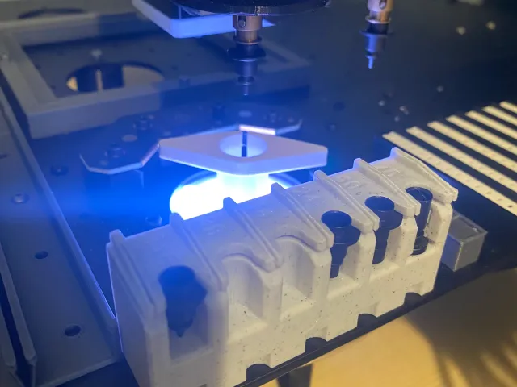
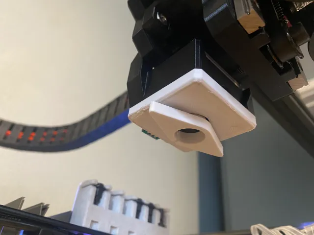
Adjustable staging plate foot
Made by: jazzychad
Link to source: https://www.printables.com/model/209164-lumenpnp-adjustable-staging-plate-foot
Description: A staging plate foot for LumenPnP with adjustable height with screw and jam nut.
Please note: this was made as a prototype with the screw threads specifically made with my printer tolerances in mind, but it should work for most printers (I think). Just be aware that if you print this, it may not work perfectly. Tested using a Prusa MINI and Ultimaker3 using 0.2mm layer height and pretty standard settings.
Photos:

Alternative Power Connector Option
Made by: Stargirl Flowers
Description: Barely a mod, but instead of cutting up the included DC brick’s power cable and wiring directly into the motherboard, you can use a DC pigtail (like this one). This lets you easily unplug the machine if you need to move it around. You can go one step further and get a little inline DC switch (like this one) and have a quick way to turn your machine on and off.
Photos:

Power Switch Mount
Made by: Jon Moyes
Link to source: https://www.printables.com/model/302674-lumenpnp-power-switch-mount
Description: Adds a simple SPST power switch mounted to the left side of the machine.
Photos:
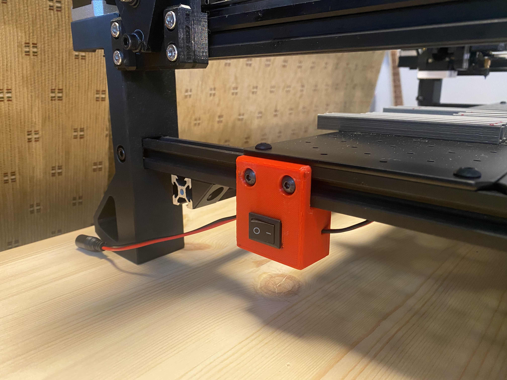
PCB holder using aluminum angle
Made by: @infiniteneslives
Files:
Description: This mod uses readily available and inexpensive 1/2” aluminum angle, weather stripping / foam tape, t-nuts, and small 3D printed clips to create a rail that holds PCBs in place.
- Cut two lengths of aluminum angle to span the width of the machine (600mm each).
- Use four mounting clamps and t-nuts to mount the angles onto the machine.
- Cut and stick foam tape or weather stripping along the angles. Preferably use 5/16” (7.9mm) thick foam- this keeps the PCBs within the ideal focal plane (10mm above staging plate).
- Place PCB stoppers along the angles as needed to hold PCBs in place.
Photos:
Parametric staging plate OpenSCAD library
Made by: Stargirl Flowers
Link to source: https://gist.github.com/theacodes/40d665b9e61ee4a3b86da20cb94df1d5
Description: I re-created the staging plate design in OpenSCAD so now you can use it to create custom versions of the staging plate or use it as a reference for creating staging plate accessories. You can customize everything from the dimensions, to the grid holes, and even the camera hole.
Photos:
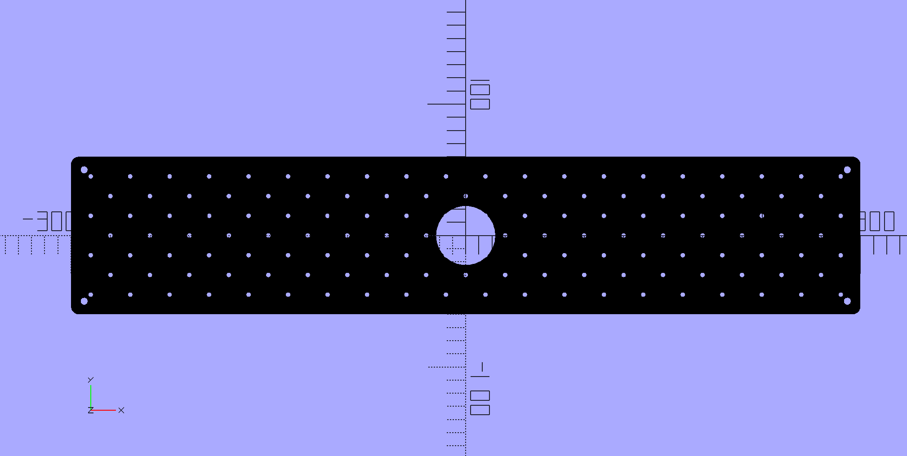
Secondary fiducial calibration rig
Made by: Lixie Labs
Link to source: https://www.printables.com/model/224290-lumenpnp-secondary-fiducial-rig
Description: This modified version of the Datum PCB mount allows for 3D calibration using a second fiducial mark!
You can find the necessary PDF for the second mark on the OpenPNP wiki here:
https://github.com/openpnp/openpnp/files/5542424/FiducialHome.pdf
Just cut it out and push it in! If you’re lucky, you cut it slightly too large and it will friction fit nicely, otherwise glue stick should work. (The second fiducial is 4mm higher than the primary.)
More info about 3D calibration:
https://github.com/openpnp/openpnp/wiki/Vision-Solutions
Photos:
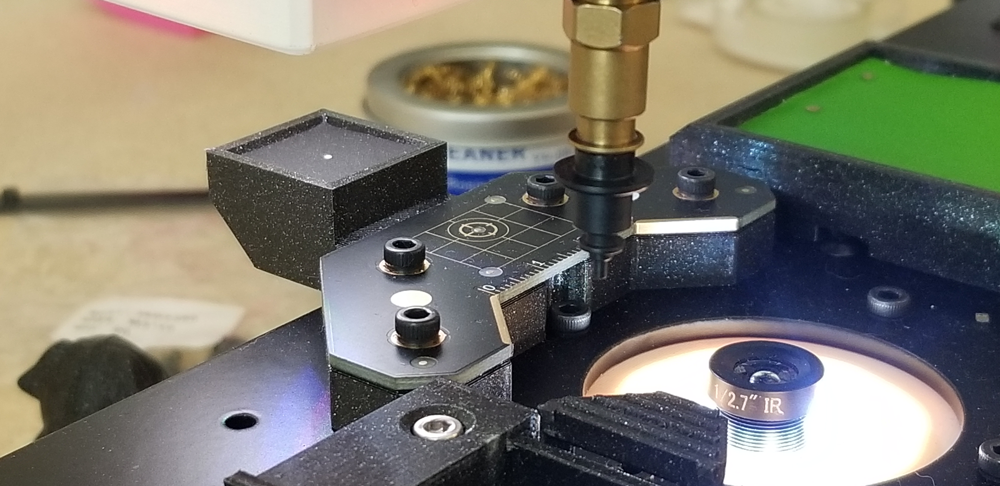
X & Y axis linear rails
Made by: Stargirl
Link to source:
- V3: https://www.printables.com/model/278803-lumenpnp-linear-rail-mods-v3
- V2: https://www.printables.com/model/235331-lumen-pnp-linear-rail-mods
- https://github.com/theacodes/3d-prints/tree/main/lumen
Description: Replaces the v-slot rollers on the X and Y axis with linear guide rails for extra-smooth and fast movement. Preserves the original dimensions of the machine and work area and also preserves the original height of the head. Instructions over on the Printables page, and there’s a separate version for V3.
Photos:

X & Y Drag Chain mod
Made by: Chris Howell (OpenEVSE)
Link to source: https://github.com/chris1howell/X_Y_DragChain_LumenPnP
Description: Drag chains in a more standard configuration for X and Y axis, provide reduced rotational torque on the Z access and smoother overall operation. Bolts on the X and Y axcess without any modification.
This mod works very well with Stargirl’s X and Y linear rails or the stock Lumen PnP 3.x rollers.
Note, this mod requires a stiff cable chain that does not sag or it may contact objects on the build plate. A Semi Enclosed drag chain is reccomended. https://www.amazon.com/dp/B07QZR6GMT
Photos:
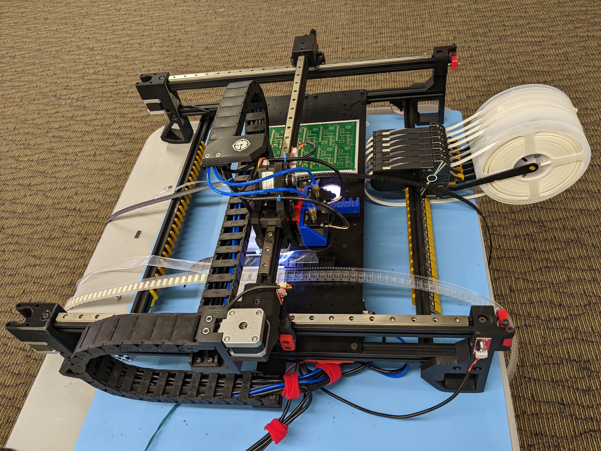
x-gantry backplate for linear rail mod with umbilical arm
Made by: vbretsch
Link to source:
https://www.printables.com/de/model/247644-lumen-x-gantry-backplate-for-linear-rail-mod-with-
Description: This is a drop in x-gantry backplate replacement for Stargirls linear rail mod to be able to attach the umbilical as in the original Opulo lumen pnp design with v-rollers.
Photo:
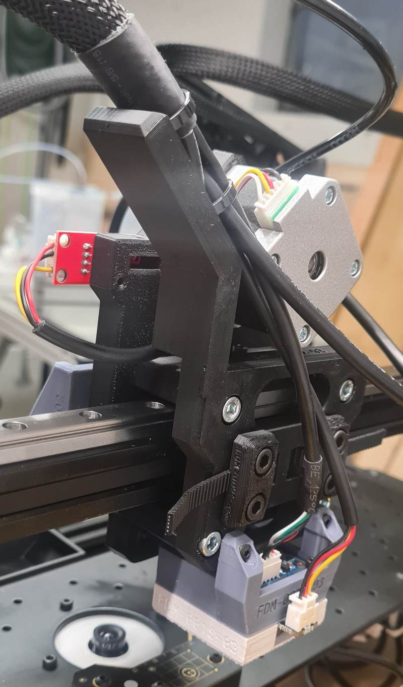
Top Camera Spacer for Stargirl’s V3 Linear Rail Mod
Made by: Jon Moyes
Link to source: https://www.printables.com/model/339437-top-camera-spacer-for-lumenpnp-with-v3-linear-rail
Description: After installing Stargirl’s awesome v3 linear rail upgrade and converting other parts of my machine to use the updated V3 LumenPnP parts, I found that the top camera lens was VERY close, if not touching, the nozzle rack. The nozzle rack was updated between v2 and v3, making it taller to match with the raised Z Gantries which enable support for taller components.
This spacer raises the camera 4mm, which leaves the lens flush with the Top Light, eliminating any chance of crashing your camera lens into anything on the machine.
Photos:
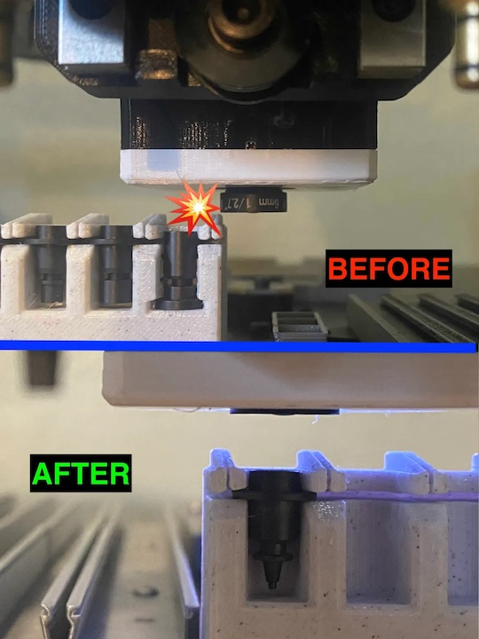
Parametric PCB holder
Made by: Stargirl
Link to source:
- https://www.printables.com/model/235905-lumen-pnp-parametric-pcb-holder
- https://github.com/theacodes/3d-prints/blob/main/lumen/pcb_holder.scad
Description: A parametric PCB holder designed in OpenSCAD to fit snugly into the Lumen PNP staging plate. This allows you to put in your PCB dimensions and generate a holder that will perfectly fit your PCB and hold it at the ideal height.
Photos:

Nozzle Rack 75 Mod
Made by: Andre Sandkühler
Link to source: https://github.com/opulo-inc/mods/blob/23abe657d6661864b852c8d8c31f6a3a1895332c/pnp/cad/FDM/nozzle-rack.FCStd
Description: I made a mod to the Nozzle Rack FreeCAD file. The original file can be found in the link above. The bigger variant of the 75 nozzle now has enough space to fit inside.
Photos:

Mobo Cover for the v3 motherboard
Made by: vbretsch
Link to source: https://www.printables.com/de/model/298667-motherboard-cover-bottom-and-top-for-lumen-pnp-mob
Description: This is a cover for the lumen PNP’s v3 motherboard, which does fit the reset and boot buttons on the motherboard.
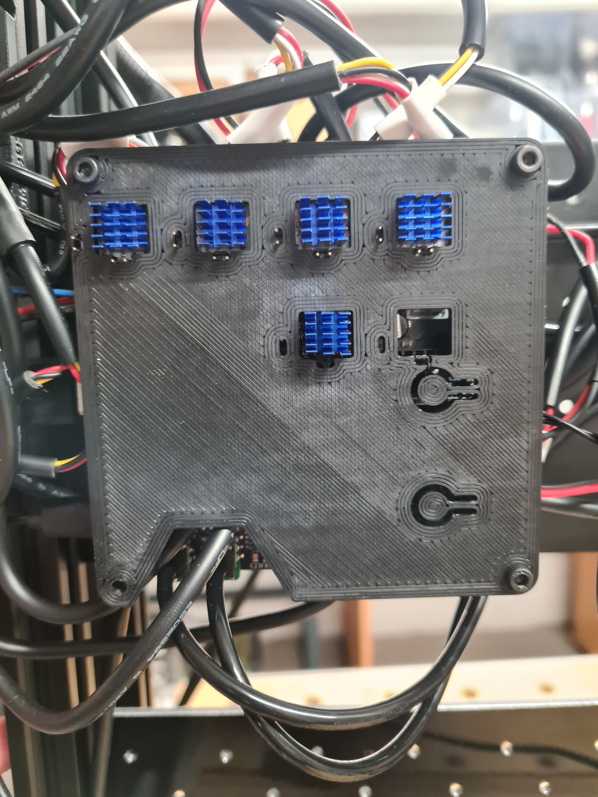
Nema8 Z-Gantry Mod for LumenPNP
Made by: rdu
Link to source: https://github.com/rdu/lumen-z-gantry-nema8
Description: This mod for the LumenPNP replaces the original Z-Gantry with one compatible with a Nema8 stepper motor. The project includes a FreeCAD file that describes the modified Z-Gantry. Instructions on how to replace the original Z-Gantry in your LumenPNP machine with this one can be found in the README file in the repository.

Dual x-axis linear rails for LumenPnP v3
Made by: dna-topoisomerase
Link to source: https://www.printables.com/model/422397-dual-x-axis-linear-rails-for-lumenpnp-v3
Description: This mod builds on Stargirl’s v3 linear rail mod to add a second linear rail on the x-axis, increasing the rigidity of the toolhead. Intended to be used with LumenPnP v3.0 x-gantry parts.
Photos:
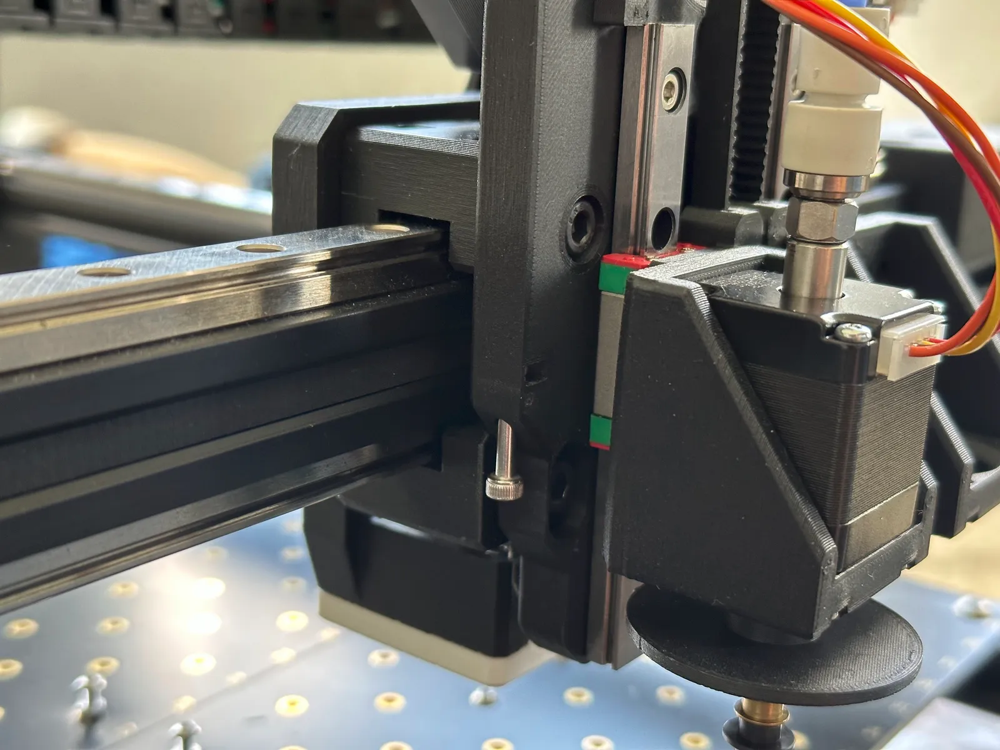
Dual Vacuum Pump Mount
Made by: Curly Tale Games
Compatible machine version: v3 or v2
Link to source: https://www.printables.com/model/661779-dual-vacuum-pump-mount-for-lumen-pnp
Description: This vacuum pump mount allows you to replace the rubber bands holding the vacuum pumps without removing the mounts from the staging plate.
This model has modeled in supports that can be easily cut or snapped off after printing.
Photos:
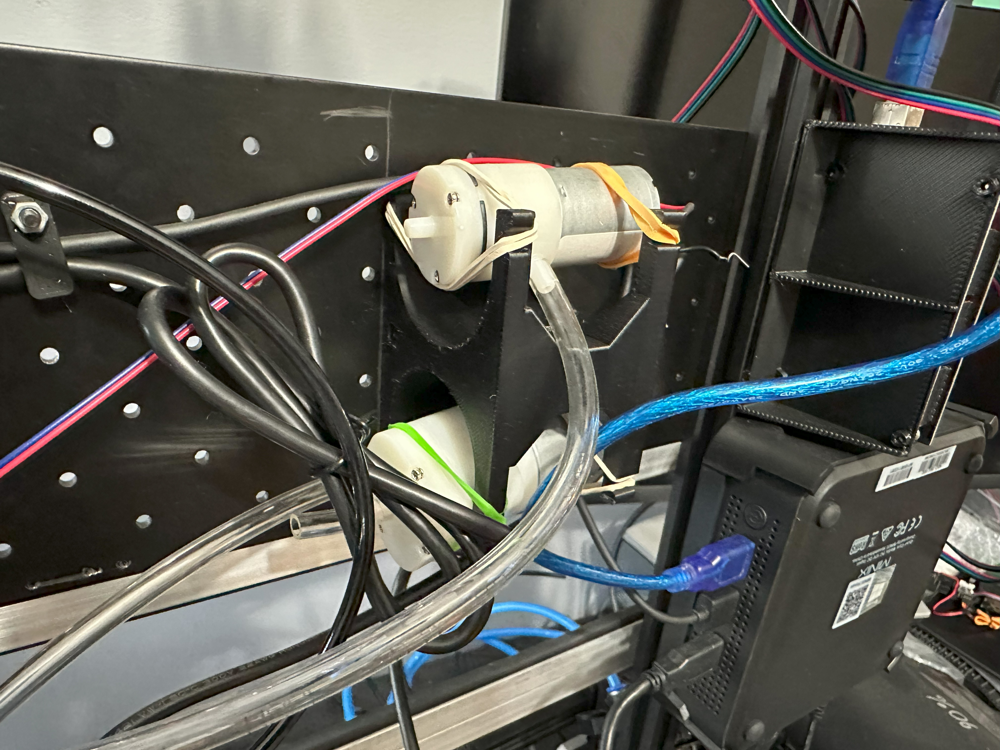
Resin Printed CP40-capable Nozzles
Made by: Andrew Ortman
Compatible machine version: v3 or v2
Link to source: https://www.printables.com/model/795539-custom-cp40-capable-smt-nozzles-for-lumen-pnp
Description: Having trouble with the black nozzles and your vision pipelines? These custom nozzles can be printed in any color (green recommended) and used along with OpenPNP’s MaskHSV op for some chroma-key goodness. These models can be printed using an off the shelf 3d printer and cheap ABS-like resin. Be sure to read the printable directions on how to get a perfect result for the small bore sizes!
Also included: a 6-slot custom nozzle holder designed specifically for these nozzles and the LumenPNP!
Photos:
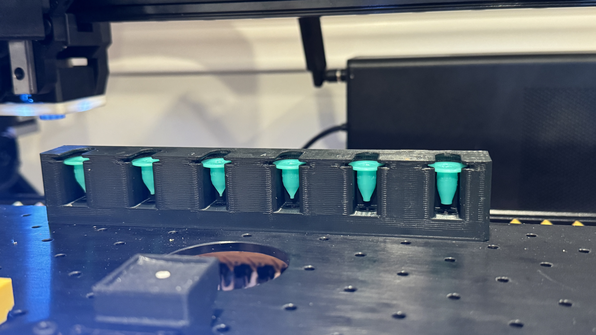
Menlu Flexible PCB Board/Panel Mount
Made by: Erik Lins
Compatible machine version: any with staging plates with 15/30mm hole pattern
Link to source: https://www.printables.com/model/897588-menlu-flexible-pcb-boardpanel-mount-for-lumenpnp
Description: This is a flexible mounting system for pcbs/panels onto the LumenPnP pick&place machine. It’s composed of a base mounting plate with fixed brackets for one pcb corner plus movable support sliders for the remaining pcb edges.
A grid arrangement of dovetails on the mounting plate allows to insert the sliders and align them to support different pcb sizes.
Photos:Feeder Adaptations
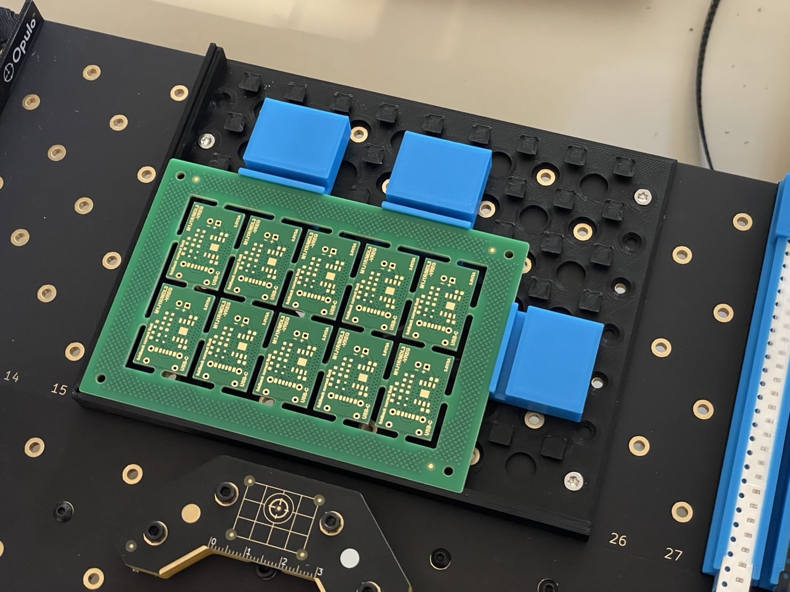
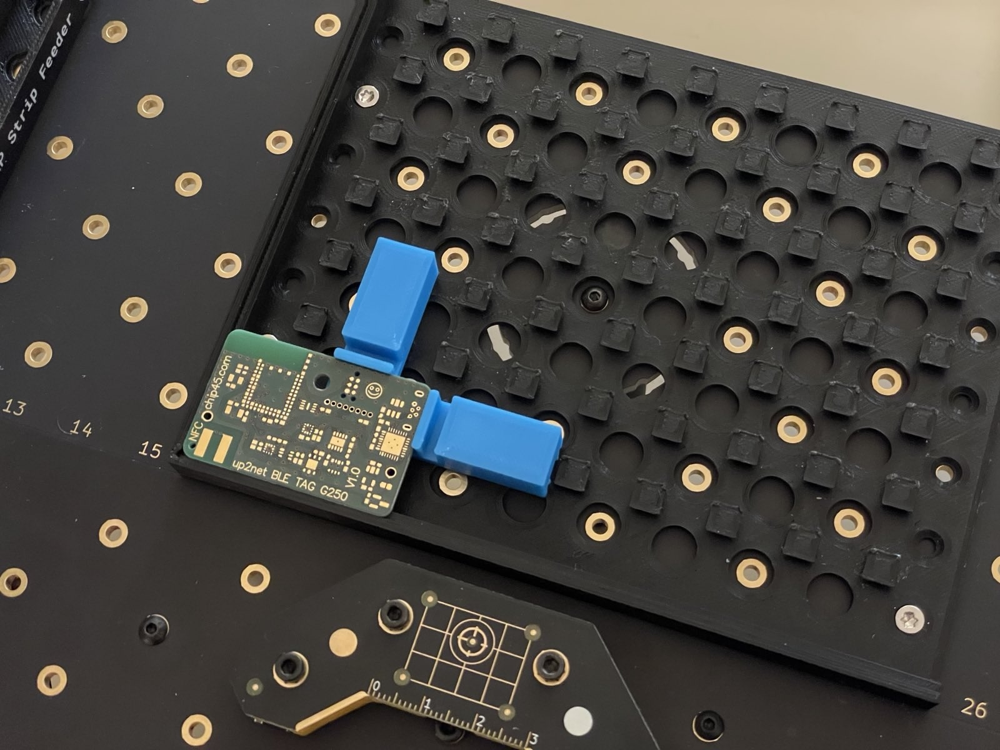
Staging Plate M3 Nut Holder
Made by: Sean Smith
Link to source: https://www.printables.com/model/1032304-staging-plate-nut-holders-for-lumen-pnp
Description: 3D printed M3 nut holder to make it easier to mount things on the top of the staging plate without have to try and get your hand under the machine to hold the nut.
Photos:
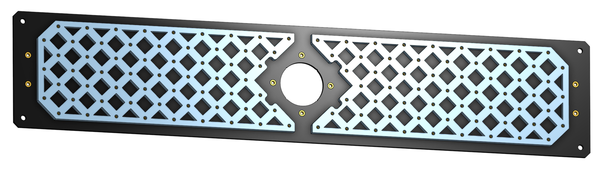
550mm Linear Rail X- Axis
Made by: Curly Tale Games
Compatible machine version: v4
Link to source: https://www.printables.com/model/1047343-lumen-pnp-550mm-linear-rail-x-axis-mod-v4
Description: This allows you to use a 550mm linear rail which is easier to source than the stock 525mm rail.
Photos:
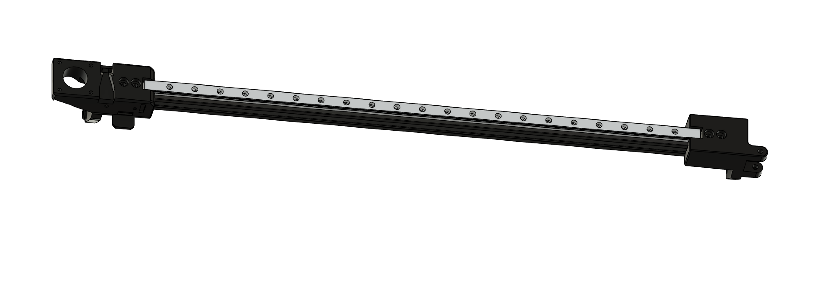